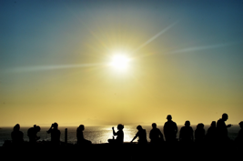
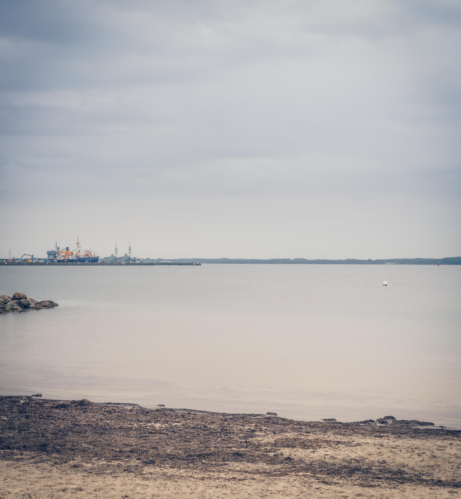
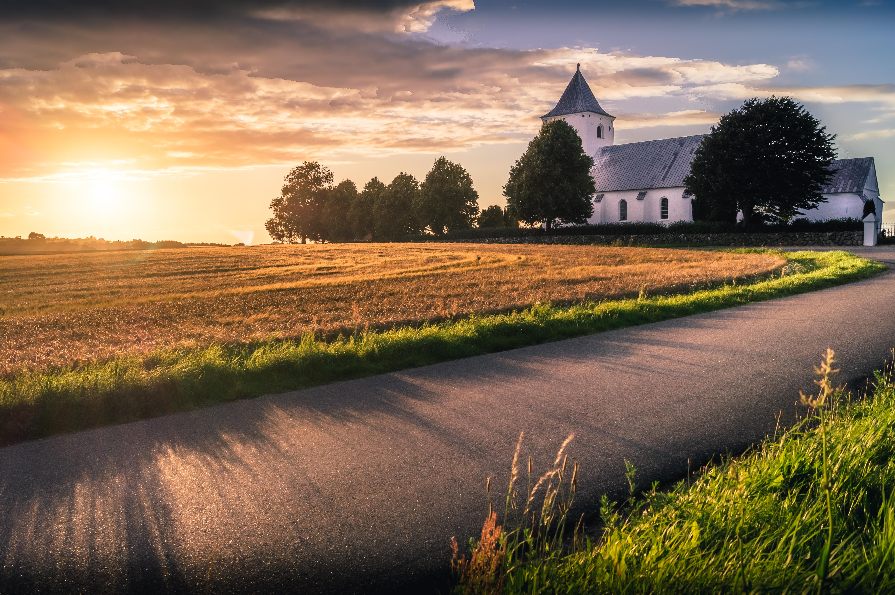
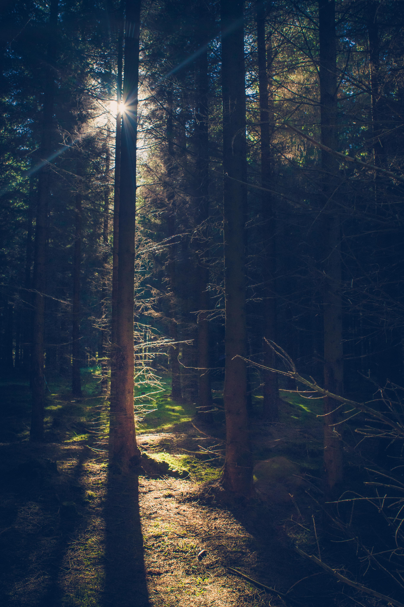
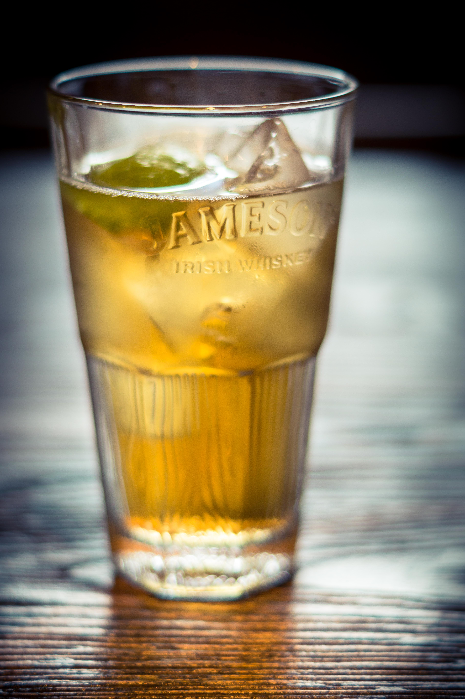

Udnyt naturligt lys
Naturligt lys, er den billigste form for belysning på vores billeder vi kan komme i nærheden af, da det er noget som hele tiden er der. I artiklen kommer jeg ind omkring hvilke typer forskellige naturligt lys der er, og forskellige måder at bruge naturligt lys på.
Hvorfor bruge naturligt lys?
Naturligt lys er jo først og fremmest noget vi altid vil være præget af, når vi tager billeder uden for et studie da solen altid vil give en form for lys i dagtimerne og månen en lille smule lys i nattetimerne. Det er langt fra os alle som har råd til at investere i studie eller en masse fint lys, så hvorfor ikke udnytte det naturlige lys vi har på bedste vis? Det skal ikke være en hemmelighed at selv professionelle foto og video folk til tider bruger naturligt lys, til at skabe fantastiske resultater.
Forskellige typer naturligt lys
Hårdt/direkte Sollys
Direkte eller hårdt sollys, er når der er en næsten eller hel skyfri himmel og solen står lige på. Dette lys kan være svært at kontrollere helt, da det giver et meget hårdt lys på dit objekt hvilket kan gøre det svært at få en god eksponering, så hele billedet bliver ens oplyst. Dog kan det også udnyttes til at giver nogle super fine effekter, blandt andet ved at bruge det som belysning bagfra eller en smule fra siden.
Open Shade
Open shade er en type lys du kan finde når solen også står meget fremme, men du bevæger dig mod et sted som dækker af for den direkte sollys, men stadig ikke står fuldstændig i skygge. Man kunne for eksempel bruge noget af den yderste skygge fra et træ som man har en svag skygge.
Blødt lys
Blødt lys opnår man når solen er gemt væk bag skyerne, så der på ingen måde er noget direkte sollys, men derimod bare er et helt fladt lys. Det er helt klart noget af det nemmeste og mest behagelige lys at arbejde med, som gør det nemt at få et jævnt eksponeret billede uden at ende med noget som er meget over eksponeret
The golden hour
The golden hour er betegnelsen for den time før solen går ned. Det er helt klart den tid hvor man får det bedste lys, da det er varmt og lækkert at arbejde med. Det eneste der er lidt træls er at man ikke har lyset at arbejde med i så lang tid, og at the golden hour ikke altid er så golden hvis man rammer en i en skyet grå dag.
Eksempler på hvordan man kan bruge forskelligt naturligt lys
hårdt Sollys i skoven:I eksemplet her har jeg udnyttet det hårde sollys som kom ned gennem trænerne, til at fange nogle forskellige nuancer i skoven, så der kommer lidt drama i billedet. |
 |
Hårdt sollys + Golden hour til portræt:Her er den hårde sollys udnyttet som kant lys, personen er vendt lidt væk fra solen så den kommer lidt bagfra. Det er med til at give en ens belysning i ansigtet da kroppen bliver brugt som skygge, men at solen stadig byder ind med noget lækkert varmt lys fra siden. Ulempen ved at bruge hårdt sollys på den her måde, kan være at man får en meget over eksponeret himmel i baggrunden, som er svær at gøre andet ved end at være hvid. |
|
Blødt lys:Her kan man nemt se at det bløde lys der kommer når solen er bag skyerne, gør det meget nemmere at få et mere ens eksponeret billede. I det bløde lys her, kan man også se at det er noget nemmere at få en pæn himmel med i baggrunden, samme tid med at ens motiv ikke har for meget eller lidt lys. |
Udnyt naturlig lys indenfor.
Her til sidst kommer der et par eksempler på hvordan man kan udnytte det naturlige lys inden for.
| Eksempel 1: En god start er som regel at finde et stort vindue hvor der kommer en masse lys ind. I det første eksempel her har vinduet været en smule højre oppe, så der kommer en masse lys ind bagfra og en smule oppe fra som giver en super belysning igennem glasset. På den måde kommer man rigtig til at kunne se hvad der er i glasset, så det ser indbydende ud lækkert ud. |  |
| Eksempel 2: Igen har jeg her fundet et vindue, denne gang med et gardin foran, så kommer de her skygger ned på bordet. Skyggerne bliver så brugt til at skabe linjer i billedet, som er med til at føre øjet mod glasset og skabe et interessant billede. Skygger kan ofte give nogle super fede effekter, og hjælpe med at skabe linjer i et billede. |
Youtube:
Er du interesseret i at se noget mere kan jeg anbefale disse to videoer:
Peter Mckinnon: Her snakker han primært om komposition, men hen med slutningerne kommer han lidt ind på hvordan man kan bruge skygger til at skabe bedre komposition
Karl Taylor: Her er en video hvor Karl Taylor giver nogle super tips til at tage portrætter i naturligt lys: